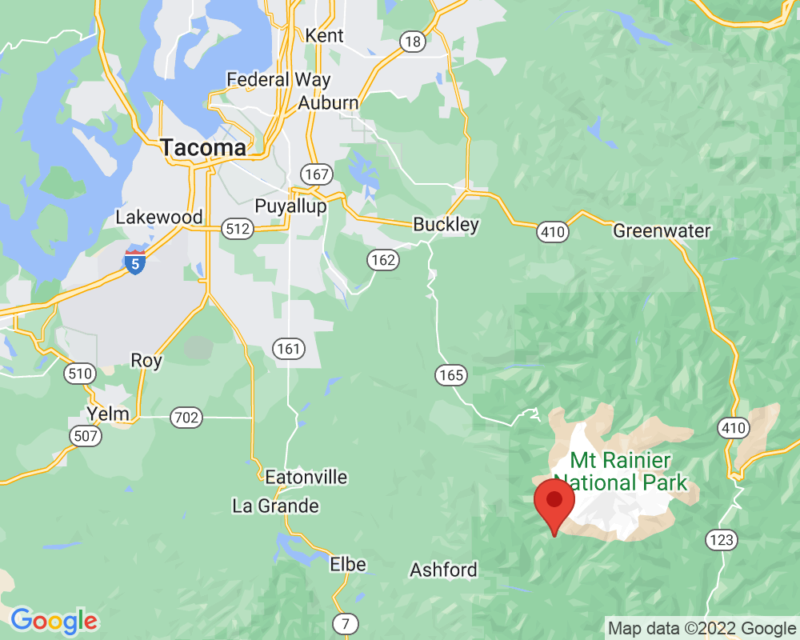
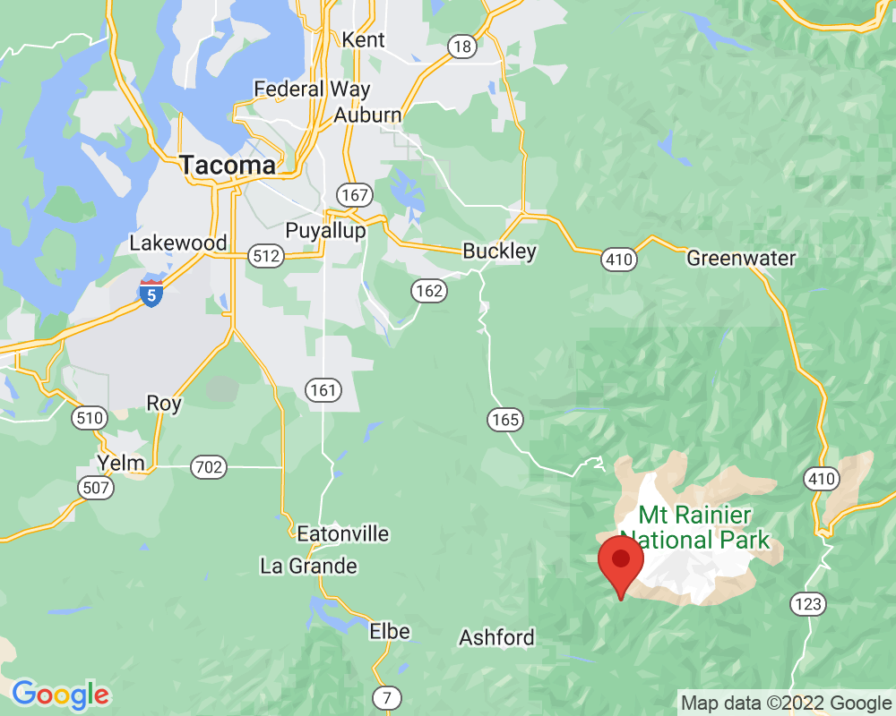

Frog on broken bridge
This small bridge fell down because it was exposed to water for many years with hikers walking on it. Now, it provides a habitat for frogs.
Visited: August 6, 2022 at 10:11 AM
Location: Longmire/Wonderland Trail
This small bridge fell down because it was exposed to water for many years with hikers walking on it. Now, it provides a habitat for frogs.
Visited: August 6, 2022 at 10:11 AM
Location: Longmire/Wonderland Trail
